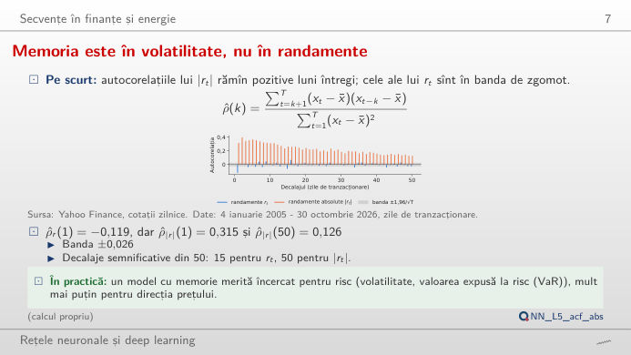
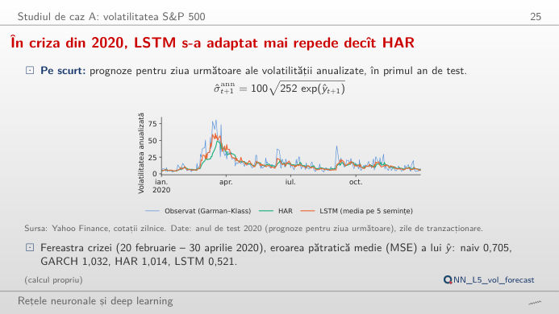
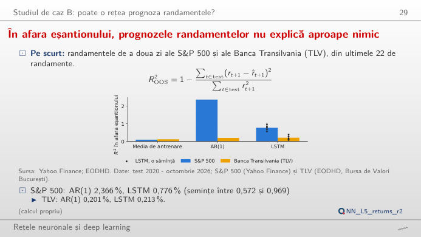
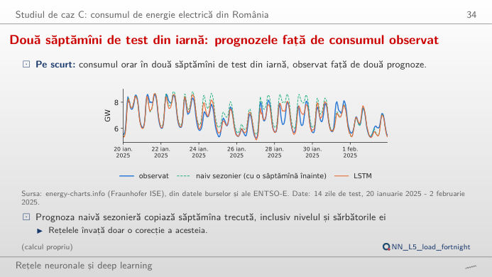
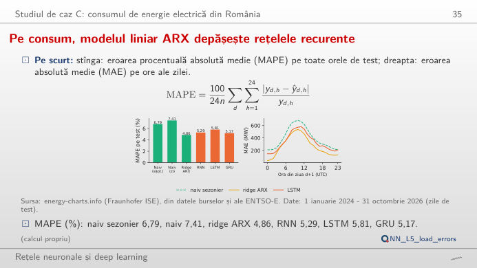

În stînga este slide-ul din curs, în dreapta aceeași figură, recalculată în browser din datele cursului și din prognozele salvate în curs cînd modificați un control. Butonul ▶ modifică parametrul principal pas cu pas. Sub fiecare figură: o sinteză numerică, o întrebare pentru sală și Quantlet-ul cu codul figurii. Alegeți o perioadă, o piață sau o zi și comparați rețelele recurente cu modelele de referință, pe aceleași zile.
Serii de timp financiare: ce se poate prognoza · Consumul de energie electrică din România, pentru ziua următoare
Serii de timp financiare: ce se poate prognoza
Memoria este în volatilitate, nu în randamente

Răspuns
Randamentele însele au o autocorelație de ordinul 1 de −0,119 și doar 15 din primele 50 de laguri ies din banda de ±0,026 (1,96/√T pentru zgomot alb). Randamentele absolute au ρ(1) = 0,315, iar toate cele 50 de laguri sînt semnificative, încă 0,126 la lagul 50: perioadele calme și cele agitate se grupează (gruparea volatilității). Mărimea mișcării de mîine este previzibilă, chiar dacă semnul ei nu este; de aceea sarcina A din curs prognozează volatilitatea. Pentru Banca Transilvania tiparul este același, dar mai slab (|r|: ρ(1) = 0,227).
În criza din 2020, LSTM s-a adaptat mai repede decît HAR

Răspuns
Pe tot setul de test, MSE este 0,966 pentru prognoza naivă, 0,786 pentru GARCH, 0,706 pentru HAR și 0,625 pentru LSTM (media a 5 semințe; GRU 0,624, RNN 0,643). Cîștigul este cel mai mare în criza din 2020 (20 februarie - 30 aprilie: LSTM 0,521, HAR 1,014, GARCH 1,032): rețeaua reacționează mai repede la saltul volatilității. În 2022, ordinea este aceeași, dar diferențele sînt mai mici (0,585 față de 0,623). Mutați fereastra: ferestrele scurte dau clasamente zgomotoase; de aceea cursul folosește testul Diebold–Mariano pe toată perioada de test (LSTM contra HAR: statistica −5,52).
În afara eșantionului, prognozele randamentelor nu explică aproape nimic

Răspuns
Aproape în întregime din criza din februarie–aprilie 2020: panta AR(1) este −0,10 (reveniri), iar în acele zile violente ea aduce cîștig. Curba cumulată sare în martie 2020, apoi merge lateral sau în jos; în afara intervalului 20 februarie - 30 aprilie 2020, R² al AR(1) este −0,2%. Ansamblul LSTM obține aproximativ două treimi din cîștigul său în aceleași săptămîni. Semnul este corect în 52,1% din zile (media celor 5 semințe; 53,1% pentru prognoza lor medie), sub proporția zilelor de creștere (54,0%). Pe TLV, R² al tuturor modelelor este între 0,1% și 0,4%. Randamentele zilnice sînt aproape imprevizibile; un R² mic și pozitiv nu este o strategie de tranzacționare.
Consumul de energie electrică din România, pentru ziua următoare
Două săptămîni de test din iarnă: prognozele față de consumul observat

Răspuns
În aceste 14 zile, MAPE este 6,0% pentru prognoza naivă sezonieră (aceeași zi din săptămîna anterioară), 3,2% pentru LSTM, 2,9% pentru GRU și 2,6% pentru ridge ARX. Prognoza naivă greșește cînd nivelul se schimbă de la o săptămînă la alta (valuri de frig, sărbători): repetă nivelul de săptămîna trecută. Pe toată perioada de test (1.035 de zile), MAPE este 6,79% (naiv), 4,86% (ridge ARX), 5,81% (LSTM) și 5,17% (GRU). Parcurgeți zilele din jurul Crăciunului sau al Paștelui: toate modelele ratează sărbătorile pentru care nu au o variabilă de intrare.
Pe consum, modelul liniar ARX depășește rețelele recurente

Răspuns
Erorile au un vîrf la sfîrșitul dimineții (în jurul orelor 10:00–11:00 UTC), cînd creșterea cererii și producția panourilor solare de pe acoperișuri fac consumul net cel mai greu de prognozat: 681 MW pentru prognoza naivă, 537 MW pentru ridge ARX, 581 MW pentru LSTM. Weekendurile nu sînt mai dificile: MAE pentru LSTM este 342 MW în zilele lucrătoare și 303 MW în weekend. Pe toate zilele de test, ridge ARX are cea mai mică MAE (269 MW, față de 293 MW pentru GRU, 331 MW pentru LSTM și 396 MW pentru prognoza naivă): un model liniar cu lagurile potrivite este un reper greu de depășit pentru o rețea recurentă.
Date: S&P 500, prețurile zilnice de deschidere, maxim, minim și închidere (Yahoo Finance, ianuarie 2005 - octombrie 2026), Banca Transilvania (TLV), prețuri de închidere ajustate (EODHD, Bursa de Valori București, din 2008), consumul orar de energie electrică din România (energy-charts.info, din datele ENTSO-E, 2016 - octombrie 2026, ore în UTC = timpul universal coordonat). Perioadele de test: 2020 - octombrie 2026 (piețe), 2024 - octombrie 2026 (consum). Prognozele rețelelor neuronale recurente (RNN), ale rețelelor cu memorie lungă pe termen scurt (LSTM) și ale celor cu unități recurente cu porți (GRU) sînt rulările salvate din curs (analysis_L5.py, semințele 20261108 + s); HAR = model autoregresiv heterogen, GARCH = model autoregresiv generalizat cu heteroscedasticitate condiționată, ARX = model autoregresiv cu variabile exogene, MSE = eroarea pătratică medie, MAE = eroarea absolută medie, MAPE = eroarea procentuală absolută medie.